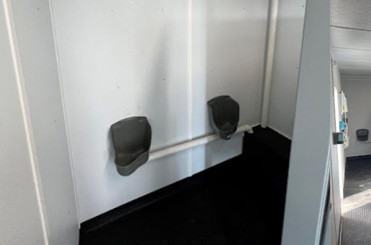
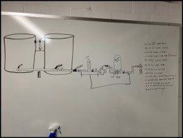
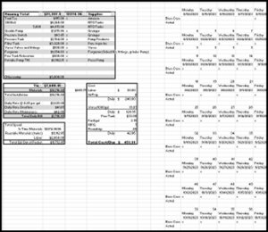
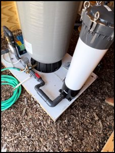

Solving the unsolvable.
We take pride in solving the unsolvable and beating expectations. Two problems customers brought us, and what we did about them.
Rescuing your jobsite.
By approaching the situation with curiosity and an open mind, AMERI-CANS discovered that the lack of durability was a problem, but the root cause of the issue was a requirement for climate control and the portable sanitation industry’s easy decision to utilize status quo, ill-spec’d equipment. “Standard” restroom trailers were the “only” option.
As a result, AMERI-CANS built two variations of a proprietary design for a more durable climate-controlled option. One built on a smaller, more maneuverable mobile trailer platform, the other on a larger, high-cube sea container framework that maximizes usable space. The result is a climate controlled, force-ventilated, durable, construction-site-appropriate option with no plumbed fixtures, pumps, or low-quality RV-style parts susceptible to standard site wear and tear. In addition, our proprietary design supports more personnel (via greater number of heads), with minimal moving parts and immunity to wind and weather.



The potable problem.
6,000 gallons a day, for 90 days, through the site’s own lines.
Our team at AMERI-CANS brought out the white boards and got straight to work brainstorming a creative solution, devising a plan to effectively move upwards of 5,000 gallons of potable water daily through an existing, in-place system of freshwater lines without disrupting or destroying existing structures.
AMERI-CANS devised a 6,000-gallon potable water delivery system backflowed through a fire hydrant, thereby utilizing existing water hookups and leaving all site improvements (decking, skirting, etc.) untouched. This required pressurizing 200 yds of 8” main and some 600 yds of 1” and ¾” water lines. Over a weekend, we sourced and assembled the materials to enable uninterrupted operations, including NSF fixtures, pumps, pressure tank, filters, and redesigned our delivery process to ensure safe sourcing and delivery of the water from start to finish. This solution went from ideation to active in less than four weeks and continued delivery of 6,000 gal daily for 90 days.


